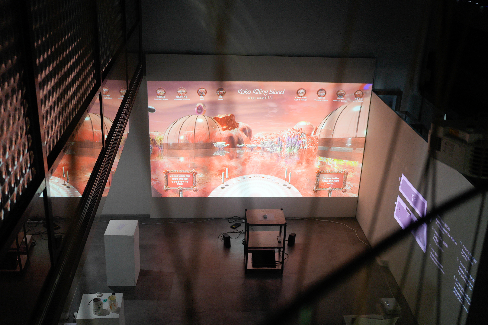
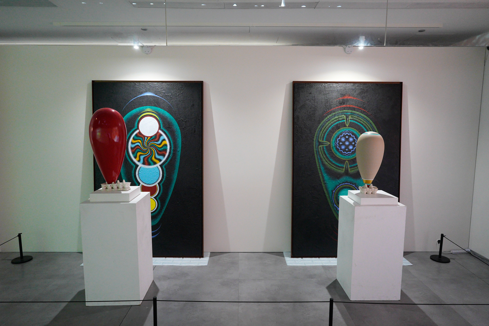
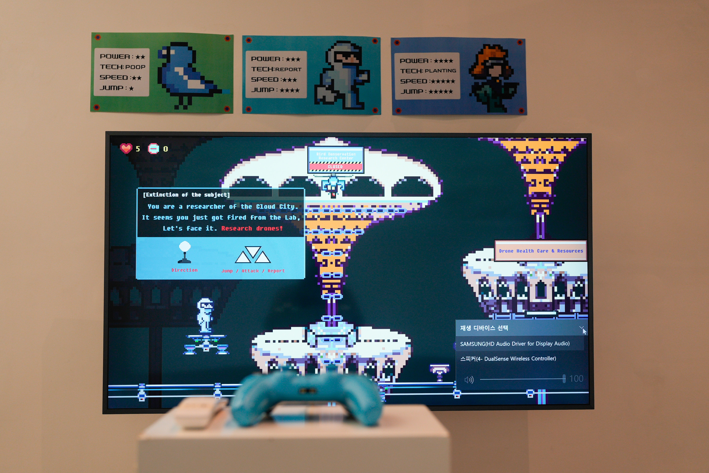
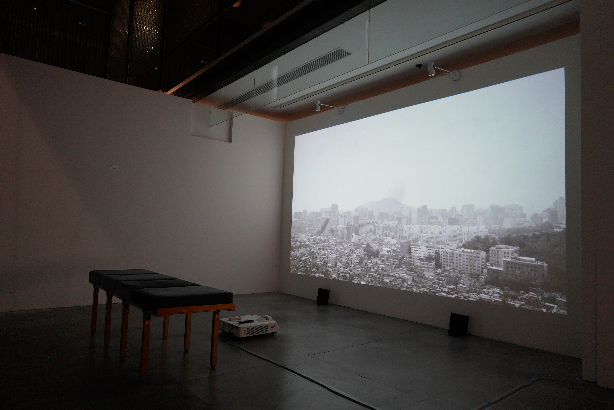
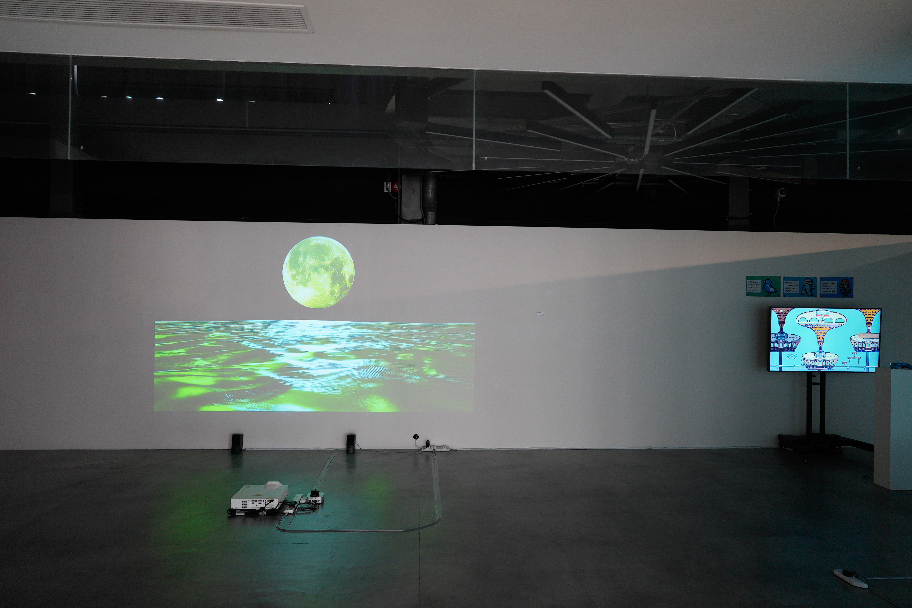
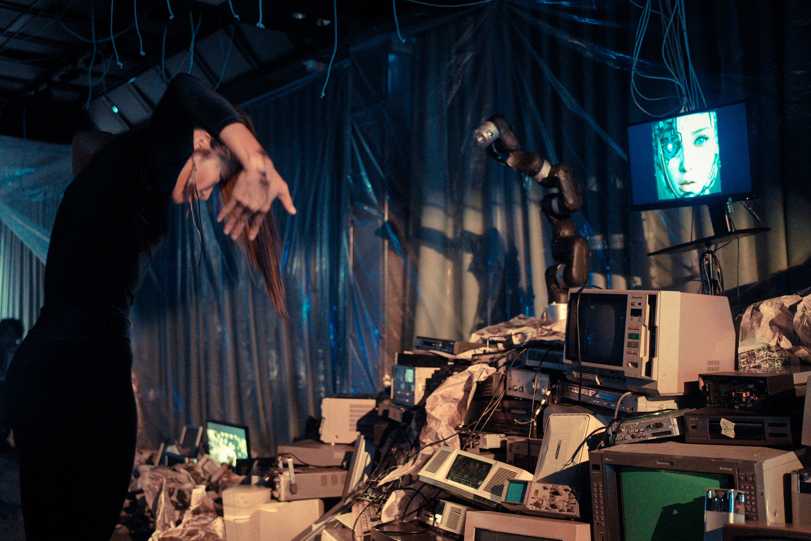

SPECULATIVE VISIONS OF A POST-CLIMATE FUTURE
Exhibition
2026/06
Korean Cultural Center in Hong Kong
Korean Cultural Center in Hong Kong, Central, Hong Kong
Recent works by Korean artists explore speculative narratives of projected futures using technological workflows made mainstream with works at Hyundai Artlab, MMCA, ACC Gwangju, and more. This media art revolution has brought Korea to the forefront of art-technology in Asia, with a view for empowering both established and emergent artists working in Korea. With Hong Kong in the midst of weather and environmental change, the work of Korean media artists working with speculative narratives about our reactions to a future of change gains momentum. The Korean Cultural Center in Hong Kong has long supported emerging Korean artists and aims to connect them with audiences worldwide. To engage the Hong Kong art and cultural community, Korean Cultural Center in Hong Kong collaborated with the Studio For Narrative Spaces to curate the exhibition, bringing together five Korean artists and a Hong Kong collaborative art project that use speculative narratives and technological experimentation to reimagine post-climate futures through sound, robotics, games, and multimedia installations.
Curator: LIU Sijia Star, RAY LC, Fange Zhang
Producers: Liu Bowen
Participating Artists: Inhwa Yeom, Sangdon Kim, Jooyoung Oh, Kohui, Yunyoung Jang, Picture Rhythm Studios, Studio for Narrative Spaces
Supported by:
Ministry of Culture, Sports and Tourism, Korean Cultural Center in Hong Kong, KOFICE, k_j_c_culturalyear
Exhibition Website: exhibitionarchive.github.io






